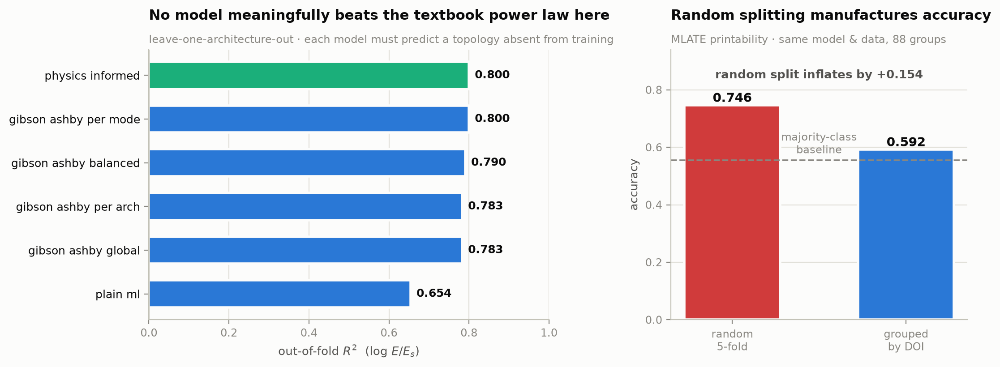
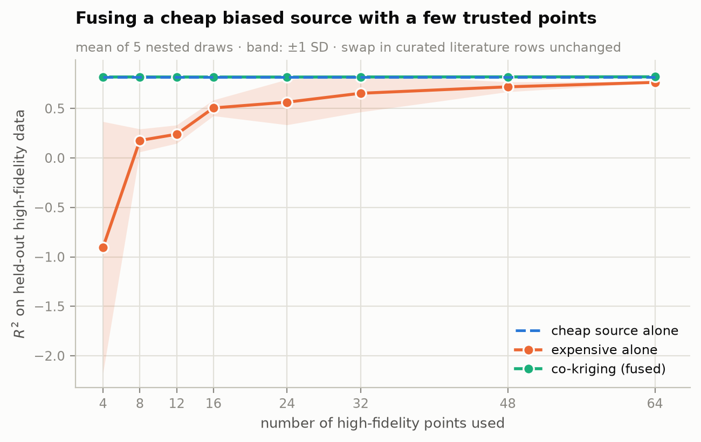

How this project decides that a model got better, and what that process has turned up so far.
.venv/bin/python tools/accuracy_ledger.py # re-measure everything, print deltas
.venv/bin/python tools/accuracy_ledger.py --rejected # what was tried and dropped, with numbers
.venv/bin/python tools/accuracy_ledger.py --freeze # adopt the current numbers as the baselineresults/accuracy_baseline.json is the frozen reference. Every run of the ledger re-measures all three headline models and prints the difference against it, so "the model improved" is a number somebody else can reproduce rather than an adjective.
Where it stands
Not one of the gains in the chart above came from a bigger model. Three came from fixing an estimator, one from changing what gets read off a classifier, and two from letting a model measure how much of its own correction to believe.
The full ladder, leave-one-architecture-out on 1806 simulated rows, every model predicting a topology absent from training:
| rung | R² | what it is |
|---|---|---|
physics_informed | 0.7996 | best physics prior + a residual scaled by measured trust |
gibson_ashby_per_mode | 0.7996 | one (n, C) per deformation mode |
gibson_ashby_balanced | 0.7904 | one (n, C), one vote per architecture |
gibson_ashby_global | 0.7828 | one (n, C), pooled over rows — the textbook answer |
gibson_ashby_per_arch | 0.7828 | one (n, C) per architecture — degenerate here, by design |
plain_ml | 0.6538 | gradient boosting, no physics |
The ceiling: a model handed the held-out architecture's own two parameters scores 0.9534, and one handed only its exponent scores 0.8475. So 0.048 of the remaining gap is reachable by predicting the exponent and 0.106 more needs the level too — and neither is reachable from the geometry descriptors available here, which is a result in itself and is why the graveyard below is as long as it is.

The seven rules
1. Freeze a baseline first. Numbers move for boring reasons — a seed, a library version, a row that stopped converging. Without a frozen file you cannot tell your improvement from the weather.
2. Find the ceiling before chasing the gap. Fit each held-out architecture's own power law: no honest model can beat that. It came out at R² = 0.953, and the exponent-only version at 0.848 against a baseline of 0.783. Knowing the whole remaining prize in the exponent was 0.065 is what stopped a week going into hierarchical models to chase it.
3. Nest every choice made on the score. A k-nearest-architecture borrow of (n, C) scored 0.818 with k picked by looking at the answer and 0.691 with k picked inside each fold. The 0.035 "gain" was the tuning. Anything selected against the reported metric has to be selected again inside the fold, and usually stops existing when it is.
4. Fix the estimator before adding a model. The pooled Gibson–Ashby fit weighted each architecture by how many times the sweep happened to sample it. One vote per architecture instead — no new parameters, no new model — was worth more than every learned correction tried afterwards.
5. Check the ruler. Printability accuracy was being reported against a 0.555 majority baseline on an ordinal target, so a model could buy accuracy by collapsing onto the commonest level, and the previous one had. A metric a constant answer nearly wins is not measuring the model.
6. Degrade gracefully or not at all. A wrapper that scores below the thing it wraps is a bug, not a trade-off. Fusion scored 0.269 where believing the cheap source alone scored 0.818; the physics-informed model scored 0.647 where its own prior scored 0.783. Both now hold their own floor by construction, because how much of each learned correction to believe is measured on held-out folds rather than assumed.
7. Split on something the designer can choose. The per-architecture power law is useless on an unseen topology because the topology label is an identity — a new design has no row in the table. The deformation mode is an input, so a new topology still arrives with one. Before reaching for a bigger model, check whether the grouping variable you already have is one that transfers.
The changes
One vote per architecture — models.GibsonAshbyBalanced
0.783 → 0.790. A pooled least-squares fit weights each architecture by how often the sweep sampled it, which is a fact about the sampling schedule and not about cellular solids. Here that was a 4× distortion: the two FDM architectures hold 471 of 1806 rows and one of them has an exponent of 3.9 against a global 2.24, so a quarter of the fit was being pulled by the single most atypical geometry in the study.
Equal weight per architecture is the same choice the validation protocol already makes — one architecture is one unit of evidence, exactly as one publication is — so this only makes the estimator agree with the way it is scored.
Split the power law by deformation mode — models.GibsonAshbyPerMode
0.790 → 0.800. Gibson–Ashby is not one power law but two: n ≈ 2 when cell walls bend and n ≈ 1 when they stretch. Sheet TPMS are closed membranes carrying load in tension; network TPMS are strut assemblies that bend. Pooling them estimates one exponent for two mechanisms.
Measured per architecture, the exponents come out as the theory orders them:
| mode | mean n | sd | architectures |
|---|---|---|---|
| sheet | 1.98 | 0.34 | 8 |
| network | 2.61 | 0.78 | 8 |
| aligned (FDM) | 1.96 | — | 1 |
| staggered (FDM) | 3.94 | — | 1 |
The reason this is not gibson_ashby_per_arch wearing a hat is rule 7. Leaving TPMS|gyroid|sheet out still leaves seven other sheet architectures in training, so the fit for "sheet" transfers; leaving it out leaves nothing that knows about gyroids. FDM's two modes hold one architecture each, so under leave-one-architecture-out they correctly fall back to the balanced fit.
Still two parameters per mode, and no continuous knob tuned on the score. In fairness to rule 3, though, the grouping was compared on the score against two alternatives: per family (FDM vs TPMS) scored 0.7910, and family × mode is identical to mode because mode already implies family. So there was one real competitor, the bending-versus-stretching physics predicted which would win, and it did — but that is a choice between three candidates, not a claim made blind. A shrunk version with the pooling strength chosen inside each fold was built and is in the graveyard.
A residual that switches itself off — models.PhysicsInformedResidual
0.647 → 0.800. The physics-informed rung used to score below the power law it is built on. The residual it learns is architecture-specific, so on a topology held out entirely the correction is not merely uninformative but actively wrong, and it was being added to a prior that was already right.
The correction is now multiplied by a trust factor s, and s is estimated rather than chosen: inside fit, the training set is split again by the same grouping the outer protocol uses, the residual stage is refitted on each inner split, and s is the smallest value on a coarse grid whose inner-CV error is within one standard error of the best.
So the trust placed in the correction is measured under exactly the extrapolation the outer protocol will impose. Under leave-one-architecture-out s comes back as 0 on every fold and the rung reduces to its own physics prior. Handed a random split it recovers s ≈ 1, because under interpolation the residual really is worth trusting — the shrinkage adapts to the question being asked rather than to a constant.
physics_informed scoring identically to gibson_ashby_per_mode is not a coincidence to explain away. At s = 0 it is that model, which is the whole point: an ML rung that has learned when it has nothing to add.
ρ and δ have to earn their place — fusion.MultiFidelityGP
0.269 → 0.819 at four trusted points; the floor held at all eight budgets.
Co-kriging fits f_high = ρ·f_low + δ. Two things were wrong with that here.
ρ was a free parameter. With four trusted points, least squares through the origin fitted ρ to whatever those four happened to say, and a 3% slip on a target of magnitude 3 is a 0.1 shift on every prediction — which is how the fused model scored 0.27 where ignoring the expensive data entirely scored 0.82. Both tiers are the same physical quantity on different meshes, so ρ is 1 up to discretisation error, and the mesh study measures that error directly: ρ now has a prior of N(1, 0.02²), read off data/mesh_convergence.csv rather than tuned.
Neither correction had to earn its place. Bounding δ's amplitude stopped it exploding but did not make it useful. Measured against the cheap source alone, the discrepancy term cost −0.104 R² at four trusted points and was still negative at sixty-four; ρ drifting to 1.018 cost another −0.009. A coarse solve already scoring 0.818 leaves a correction very little to learn from a handful of points and plenty of room to invent.
So both are now multiplied by a trust factor measured the same way the residual's is: leave out each trusted point in turn, refit, and take the least total trust whose error is within one standard error of the best. Predictions are linear in both factors, so one refit per fold prices the whole grid, and gp_low_ is deliberately not refitted inside the loop — it is a function of the cheap tier alone and has never seen a trusted point.
| trusted points | fused (was) | fused (now) | high-fidelity alone | ρ | δ trust |
|---|---|---|---|---|---|
| 4 | 0.269 | 0.819 | −0.902 | 1.000 | 0.00 |
| 8 | 0.615 | 0.819 | 0.177 | 1.000 | 0.00 |
| 16 | 0.692 | 0.819 | 0.506 | 1.000 | 0.00 |
| 32 | 0.762 | 0.819 | 0.654 | 1.000 | 0.00 |
| 64 | 0.768 | 0.821 | 0.765 | 1.000 | 0.00 |
The cheap source alone scores 0.8184 — the floor fusion must never fall below. It now holds it at every budget.
Read that table honestly. Both trust factors come back at zero, so the improvement is not that fusion started working. It is that the model now correctly reports that on this mesh pair the expensive tier has nothing to add which the coarse one did not already have — instead of losing 0.10 R² pretending otherwise. That is rule 6 doing its job, and it is the property the whole argument for fusion rests on: a correction with no evidence behind it must vanish and leave ρ·f_low standing. On a mesh pair where the coarse solve was genuinely worse, or with Tier 3 measurements in place of fine-mesh solves, the same machinery is what would let δ switch back on.

Printability is ordinal, and accuracy was the wrong ruler — pipeline/printability.py
QWK 0.144 → 0.375, Spearman 0.278 → 0.546, accuracy 0.587 → 0.593.
Printability is a 0–3 score that was being predicted with a multiclass classifier treating those four levels as four unrelated names. Calling a 3 a 0 was scored exactly as badly as calling it a 2, so the model had no reason to prefer being close, and its ranking was nearly worthless even while its accuracy looked respectable.
And accuracy is degenerate on this target: 55.5% of rows are level 3, so answering "3" to everything scores 0.555 and the honest grouped number to beat was only +0.029 above that. A model can buy accuracy by collapsing toward the majority level, which is precisely what the classifier was doing.
The fix is one change, not two: keep the classifier — the levels really are discrete and it models them well — but read out its probability-weighted expected level, Σk·pₖ, instead of its argmax. A row the forest splits between levels 2 and 3 becomes a 2.4 instead of a coin flip between two labels the metric treats as equally far apart.
| grouped readout | accuracy | QWK | MAE (levels) | Spearman |
|---|---|---|---|---|
| answer the majority level to everything | 0.555 | 0.000 | 0.726 | 0.000 |
| classifier argmax | 0.587 | 0.144 | 0.645 | 0.278 |
| expected level Σk·pₖ | 0.593 | 0.375 | 0.604 | 0.546 |
Strictly better on every measure at once, accuracy included. (Recomputed on GitHub's Linux servers the expected-level row comes out at 0.592 accuracy and 0.373 QWK: random forests move in the third decimal between operating systems. The stiffness ladder and the fusion results reproduce there to four decimals.) Quadratic-weighted kappa is reported alongside accuracy from here on, because it is the one metric answering "3" to everything cannot win: it scores exactly 0.
Features are enriched at the same time. Raw %w/v columns describe an ink by how much of each of fifty possible ingredients it contains, which makes two inks of identical chemistry at different dilutions look unrelated. Composition is therefore also expressed as fractions of total solids, plus total solids itself, the component count, and two extrusion ratios carrying the shear the ink actually sees.
The graveyard
Everything below was built, measured and dropped. It is in the repository so the next person does not spend the same week, and so "you should have tried X" comes with a number attached rather than an opinion. tools/accuracy_ledger.py --rejected prints it.
Ladder — leave-one-architecture-out R², textbook 0.7828, adopted 0.7996.
| score | what | why it went |
|---|---|---|
| 0.8180 | kNN over architectures, k = 8 chosen on the score | Reported high and false. The same estimator scores 0.691 once k is chosen inside the fold. Rule 3. |
| 0.7910 | per-family power law (FDM vs TPMS) | family is design-time knowledge too, but it splits where the physics does not — sheet and network TPMS share a family and differ by 0.6 in exponent |
| 0.7904 | per-mode law shrunk toward the pooled fit, λ nested | came back ambiguous: one-SE picks λ = 0 (0.7904), argmin picks 0.75 (0.8000) on the same inner folds. A knob whose answer depends on which standard-error convention you hold is not evidence, so the adopted model has no knob |
| 0.7904 | two-term C₁ρⁿ + C₂ρ (bending + stretching) | not rejected on score — C₂ fits to zero, so it is the adopted single-term fit with two extra parameters |
| 0.7829 | cubic in log ρ | curvature confounded with the between-architecture spread, plus variance |
| 0.7826 | percolation form C(ρ − ρ_c)ⁿ | ρ_c fits to its lower bound; no architecture-transferable threshold |
| 0.7770 | Huber loss on the power law | the tails it downweights are real geometries, not outliers |
| 0.7754 | quadratic in log ρ | as cubic |
| 0.7615 | dimensionless-only feature block for the residual | scale-free features transfer no better than the existing design block |
| 0.7160 | hierarchical GA: ridge from design-time morphometry → (n, C) | 17 architecture-level points, 8 descriptors; the best descriptor correlates 0.61 with n and that is not enough |
| 0.6910 | hierarchical GA: kernel pooling, h and λ nested per fold | the honest version of the kNN borrow; nesting removed the gain entirely |
Fusion — R² on held-out fine-mesh cases, cheap source 0.8184.
| score | what | why it went |
|---|---|---|
| 0.8221 | stacking ρ·f_low with a high-fidelity GP, weight nested by LOO | that score is at 4 points only, where one of five draws took a 10% weight; at every other budget the weight is 0 and it is the adopted model plus a second GP per fold. +0.003 on one budget does not buy the machinery |
| 0.7208 | discrepancy trust by LOO argmin instead of one-SE | at 4 trusted points argmin believes 35% of a correction fitted to 3 of them |
Printability — grouped-by-DOI accuracy, majority 0.555, adopted 0.593.
| score | what | why it went |
|---|---|---|
| 0.512 | cut points fitted to maximise QWK inside each fold | QWK rises to 0.477 but accuracy falls 0.08 — the cut points buy ordinal agreement by moving mass off the majority level. A real trade-off rather than an improvement |
| 0.572 | ExtraTrees in place of the random forest | QWK 0.341; worse on both |
Adding to this
A new idea is adopted only if it clears all seven rules. In practice:
tools/accuracy_ledger.py --freezeif the current numbers are not already the frozen baseline.- Build the variant. If it has a hyperparameter, select that hyperparameter inside the fold before reporting anything — rule 3 has claimed more candidates here than any other.
- Re-run the ledger and read the delta.
- If it does not clear the floor of whatever it wraps, it is not a trade-off, it is a bug — see rule 6.
- Whichever way it goes, add it to
REJECTEDintools/accuracy_ledger.pywith its number and one line on why. A measured failure is a contribution; an unmeasured opinion is not.